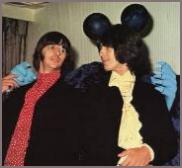
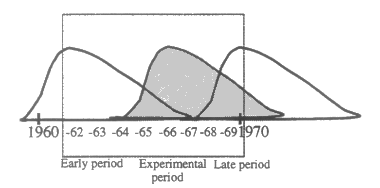

The rise and fall of the experimental style of the Beatles |
|||
| 5. Summary and discussion | |||
| by Tuomas Eerola | |||
 The hypothesis for the normative life span of style, which was based on Gjerdingen's study (1988), was strongly supported by the results from the experimental period of the Beatles. The rise and fall of the Beatles' experimental style was found to be more than a metaphor. The stylistic features of the Beatles' experimental style and their statistical distribution exhibited curves highly similar to the normative life span. |
|||
|
|
|||
| 1 | Summary. The hypothesis for the normative life span of style, which was based on Gjerdingen's study (1988), was strongly supported by the results from the experimental period of the Beatles. The rise and fall of the Beatles' experimental style was found to be more than a metaphor: The stylistic features of the Beatles' experimental style and their statistical distribution exhibited curves highly similar to the normative life span. The three stylistic periods of the Beatles and the nature of stylistic change including the overlapping nature were also demonstrated. The results portrayed the career of the Beatles and their musical style periods adeptly and the study provided support for the normative life span of the style on a different time scale and in a totally different type of music. Because the time span studied did not include the beginning of the early period of the Beatles, it did not demonstrate the normative life, span as well but the model also had relevance there too — the distribution of the early period features was almost the opposite of the model. | ||
| The other hypothesis concerning typicality and population was proved by finding the most prototypical songs of each period. The songs obtained were appropriate to the literature about the Beatles. Thus they reinforced the connection between the typicality and population, the validity of the chosen stylistic features and ultimately the concept of the life span of style. | |||
| Even if the normative life span of style was demonstrated by a less than total coverage of all the stylistic features of the Beatles' music, it is more a question of what the aim of the study is. Aligning with the aim of the style analysis, the purpose was to examine the change and one period as a part of the categorical periods in which we divide the music that sounds different. Yet, it is interesting that it was possible to answer some questions about the quality of the stylistic change even if the results display the quantity of the stylistic features. Therefore the features, I think, were adequate for the purposes of this study and in the light of the results the stylistic features chosen can be considered as meaningful ones. However, on the basis of one band and mainly one of its stylistic periods, it is unwise to generalize the results for different musical styles. There is the possibility that all the factors affecting the songwriting process, such as the ideology, need for novelty, technology, personality and such, may affect the periods in a way which was not covered here. | |||
| A further discussion of how the life span of style and the periods are perceived is needed. Our common assumption about the life span and the periods would present them more uniformly, without the asymmetricity. Moreover, in these estimations people often consider (also evident in some of the divisions presented in Heinonen and Eerola, 1998: 3-32) the early albums to be more experimental than they here appear to be. The difference can either be in my choice and definition of the features or the common estimation could be in some way biased or both. The typicality nevertheless directs the estimations and the reasons for common estimation errors are explained in psychology with reasoning heuristics. | |||
| In the availability heuristic people evaluate "the frequency of classes or the probability of events ... by the ease with which relevant instances come to mind (Tversky & Kahneman, 1973: 207). Hence, a few good examples (qualitative) tend to dominate the generalizations (quantitative) we make. Also, the occurrence of typical examples is held to be more probable than it really is, known as the representativeness heuristic (Tversky & Kahneman, 1972: 430, quoted in: Ashcraft, 1989: 550). What is more important, these biases might cause overestimation of the beginning of the experimental period because it has first to be compared with knowledge of the early period in order to notice the change at all. | |||
| In other words, the atypical examples within an expected schema are recognized easily. Tversky (1977) explains these differences in similarity judgements with the help of the subject and a referent relation: the choice of the referent and the subject is in part determined by the most important or salient concept; the more prominent concept being the referent. We say that "Yesterday is like a song from the experimental period", when the experimental period is the more prominent concept in the pair, causing us to overestimate the experimental aspect of that time. Therefore, both these biases might affect common judgements of this material: On the Help! (1965) album there is only one song that can be called experimental but because the example (Yesterday) is so striking (representativeness) and famous (availability), people are tempted to term the album more experimental (referent) than it would be from a quantitative point of view. Accordingly, the asymmetricity of the life span might not be subjectively perceived at all because people tend to evaluate the life span of style and therefore the period by the most easily available and representative examples. | |||
| The most convincing explanation for the skewness of life span might lie in the process of creation. At first new features are used gradually more and by the same token the preference for them is linked with familiarity to them. This causes a rapid rise in the use of features but the cumulative pressures for novelty make greater demands. Finally it becomes unreasonable to use the same solutions because the amount of available combinations is diminishing and their effective usage is becoming increasingly harder and the results more complex (Martindale, 1990). Supporting evidence for the increased complexity in this material came from two computerized analyses of the Beatles' lyrics (West & Martindale, 1996; and Whissell, 1996) but a great deal of work needs to be done regarding the musical parameters in question. | |||
| These results speak to the innovative strategy of the artists but they will also pose additional questions, such as when do new features become old ones and is using, them a conservative strategy? As in this material, the Beatles were keen on taking new ideas from outside the tradition between 1965 and 1967 but after a while it might not have been possible anymore, because the musical style would have changed too rapidly: too much novelty compared with redundant information would have made the music incomprehensible. | |||
| The process of change seems to take place in a shorter time span in popular music than in classical, which might be explained in many ways: more direct feedback from the audience and other artists, the circulation of ideas is easier, the composers can access a wider range of styles, the composing situation is more collective (cf. Hargreaves, 1986: 206) and the culture stresses more individual contributions (Merriam, 1964: 79, 307). | |||
| In conclusion, memory — or the process how new elements are introduced and used — causes the normative life span of style to be asymmetrical but reasoning heuristics and generalization causes the estimation of it to be more symmetrical. | |||
| 2 | Discussion. The results are in accord with the historical view of the style, style periods and stylistic change. The metaphor of growth and decay and the overlapping nature of stylistic change was well demonstrated. The life span would seem to confound the concept of rigid stylistic periods but be valid in its own accord. Besides showing the inherent difficulty in the periodic divisions, the results explain how the act of dividing the periods must leave out some information. For example, according to the results obtained here, the Beatles' three style periods are abstracted to encompass the following years: The early period (1962-65), the experimental period (1965-67) and the late period (1968-70). As opposed to illustrating stylistic periods as blocks in time, it is possible to display the periods of the Beatles in such a way that the individual style periods consist of modified normal distribution curves (Gjerdingen, 1988: 105), that is, ideal forms of the normative life span of style. All these are realized in Figure 5. | ||
 |
|||
| Figure 5: The Beatles' three style periods as consisting of the normative life spans of style |
|||
| In the Figure 5 the square outlines the time span studied, namely, the recording career of the Beatles. The darkened period represents the experimental period. It is interesting to note that although the whole figure is a theoretical representation, it is not far from the results obtained from the real musical material (see: Figure 4). | |||
| It might be possible that a similar figure (Figure 5) could depict longer periods and stylistic frames within them, on a higher hierarchic level of style, as Gjerdingen's study did. The material in this study represented a personal style in the hierarchy, even if there were several composers, and can be placed in the style hierarchy and concrete history of popular music as follows: | |||
|
|||
| For example, Donald Clarke (1995) describes rock music as being born in the 1950s and having died "a heat death" in the 1970s in his aptly titled book The Rise and Fall of Popular Music. Similarly, the whole career of the Beatles can be portrayed using the rise-and-fall metaphor but any period within it seems to conform to a similar pattern. Accordingly, if the idea of overlapping style periods, shaped as life spans, is taken to explain change in all of the hierarchical levels, change in the history of music is immediately seen as a more complex series of events: a period consists of several composers' works and their individual stylistic periods, which together create epochal style periods and several epochal style periods create a large historical style period and eventually several large historical style periods. The basic pattern of change, however, might still be comparable on all hierarchical levels, although the reasons and the ways of change are entirely different. | |||
| A normative life span of style may prove functional for style criticism; it is useful to understand the nature of style and stylistic periods, and the way they change constantly, usually without any gaps, even if the reasons for the change must be found elsewhere. In this way, the style analyst explaining the style periods afterwards, when they can be more easily divided, sees continual change as the overlapping of several periods. Therefore the term for these periods can be used in two ways: periods can be either block-like or, when they comprise of stylistic features, more organic and possibly displaying the rise-and-fall pattern. Although many variables, such as artistic events, political events or events in composers' lives also affect the history of a style, they might still share similar histories. Thus, the very act of categorizing, in a way, seems to force upon data an anticipated shape because we all have minds that work in a similar way. | |||
| This anticipated shape might be commonly known as a rise and fall, without any asymmetricity, the prototypes directing the evaluation of the periods. Whereas the prototype is directed by the central and the highest number of occurrences, it might also enforce common estimation errors. As these abstraction processes are basic principles in human perception and also the essence of style criticism, statistical methods are helpful and relevant in the analysis. We compare, for example, new songs we hear with our stereotypical assumptions. The comparison helps to understand that style, the individual works and their peculiarities within that style or period, but possibly other styles and periods as well. Although the method used in this essay does not tell us why the changes happen or where they originate from, it could be a way of illustrating change, in support of other methods. | |||
| 2000 © Soundscapes | |||